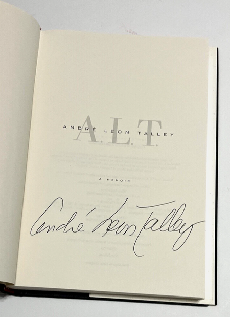
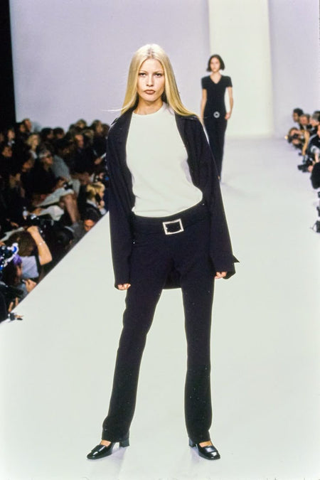
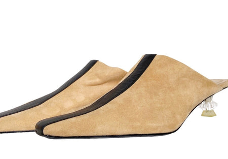
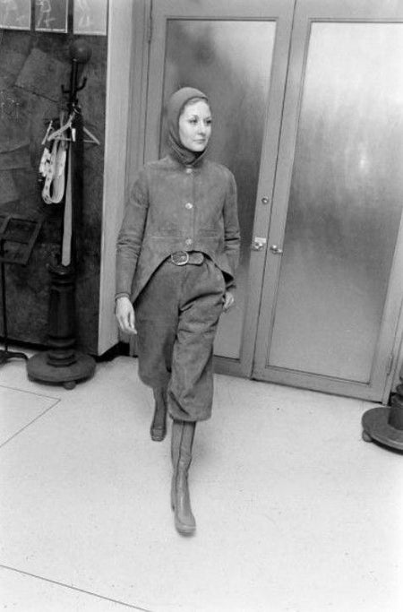
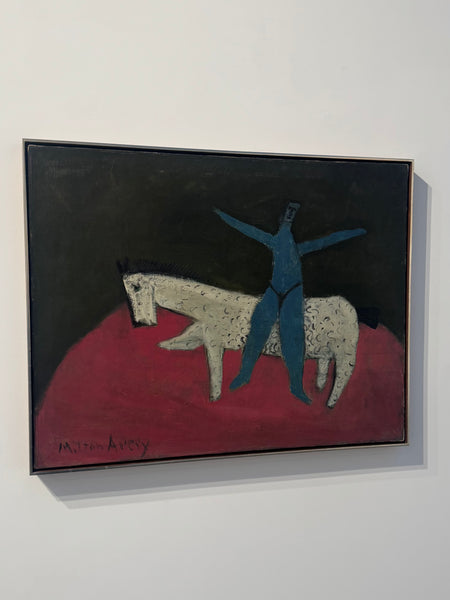
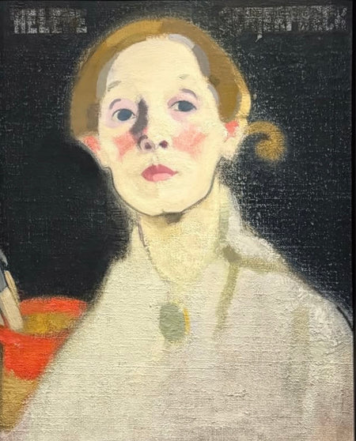
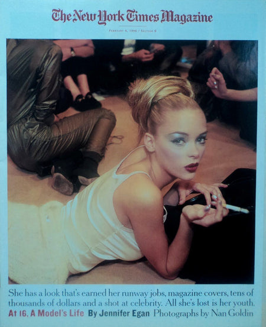

Sorbara’s
Live image inspiration gallery & shopify integration
Built Source, a living visual reference page for Sorbara’s, a Brooklyn vintage store. The page connects directly to the store’s Cosmos account, refreshes automatically as new images are saved, and publishes the collection on Sorbara’s Shopify site.
View Source on Sorbara’s
View Sorbara’s on Cosmos






